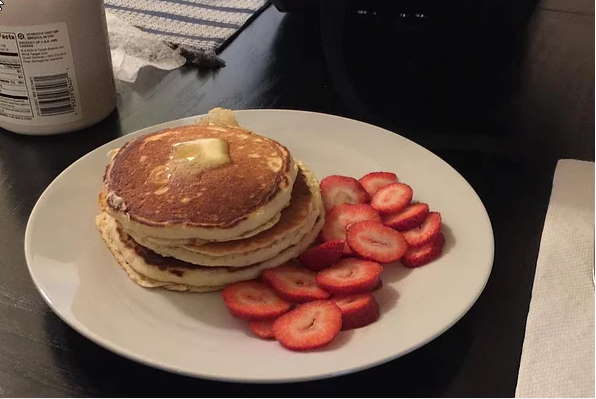

Pancakes★ Good Old Fashioned Pancakes
 8 servings
8 servings 20 minutes
20 minutes Source
Source Vegan
Vegan Sweet
Sweet
This is a great recipe that I found in my Grandma’s recipe book. Judging from the weathered look of this recipe card, this was a family favorite.

1½ cupsall-purpose flour3½ tspbaking powder1 tspsalt1 tbspwhite sugar1½ cupsmilk (sometimes more, look at tickness and how it forms when in pan)1egg3 tbspbutter, melted
In a large bowl, sift together the flour, baking powder, salt and sugar. Make a well in the center and pour in the milk, egg and melted butter; mix until smooth.
Heat a lightly oiled griddle or frying pan over medium-high heat. Pour or scoop the batter onto the griddle, using approximately ¼ cup for each pancake. Brown on both sides and serve hot.